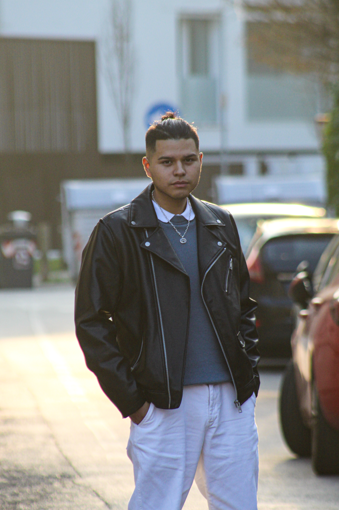
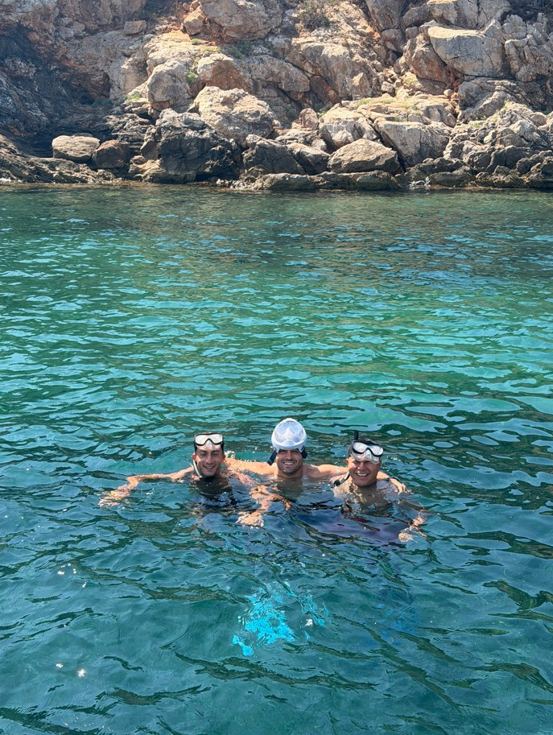
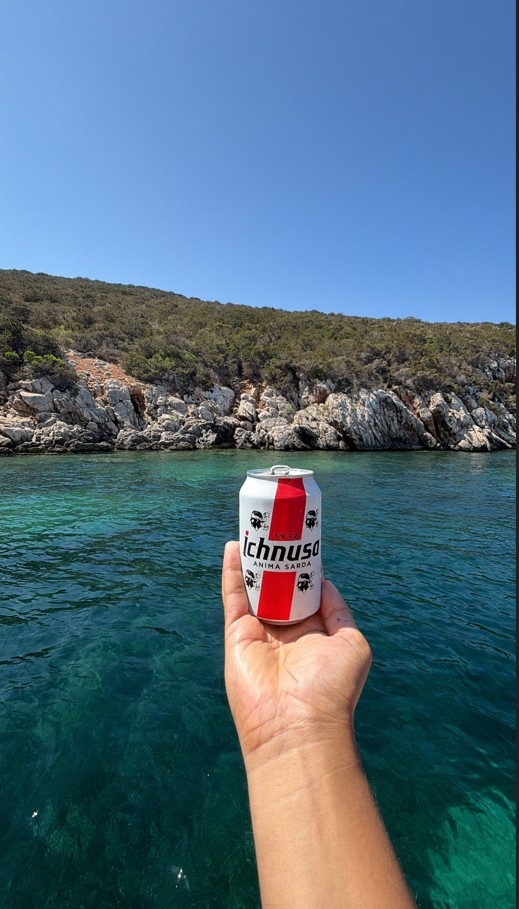
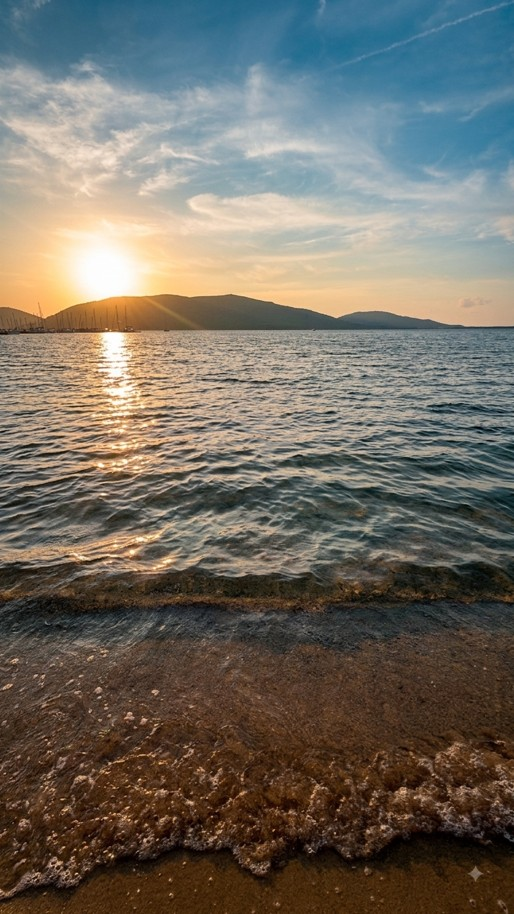
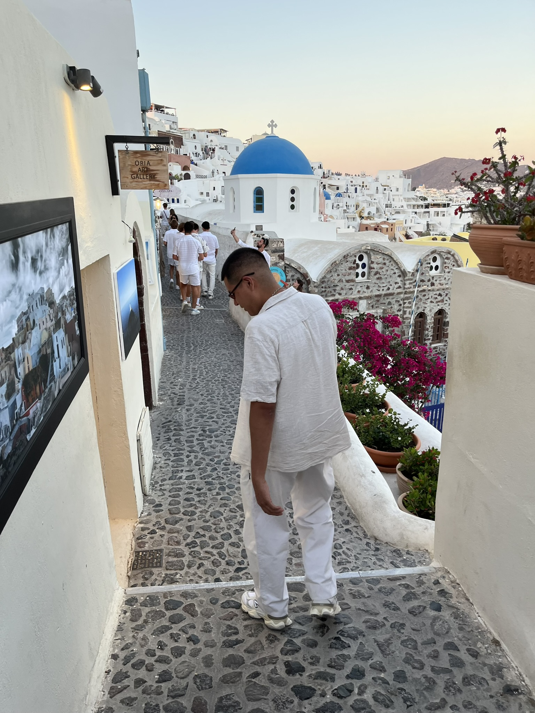
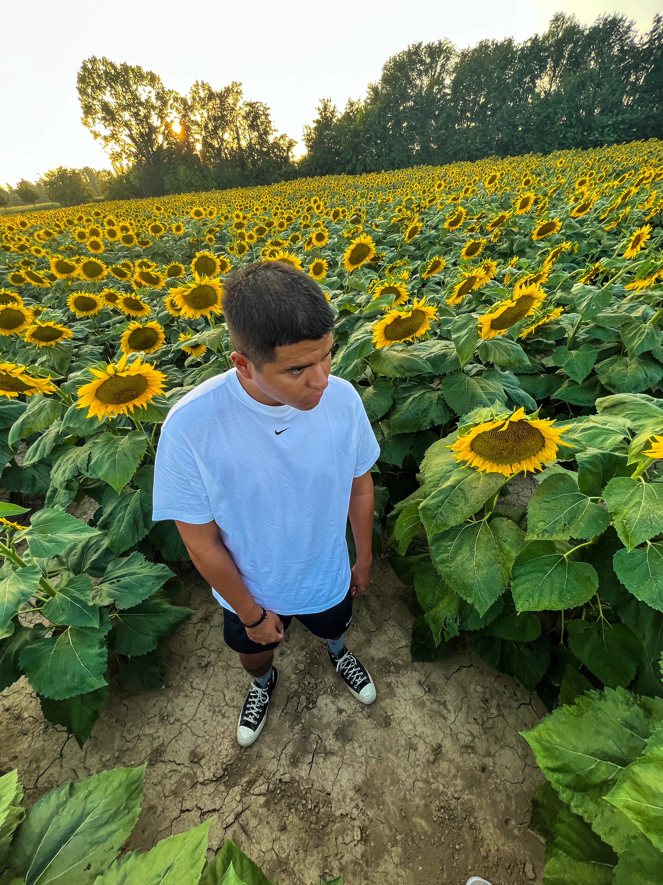
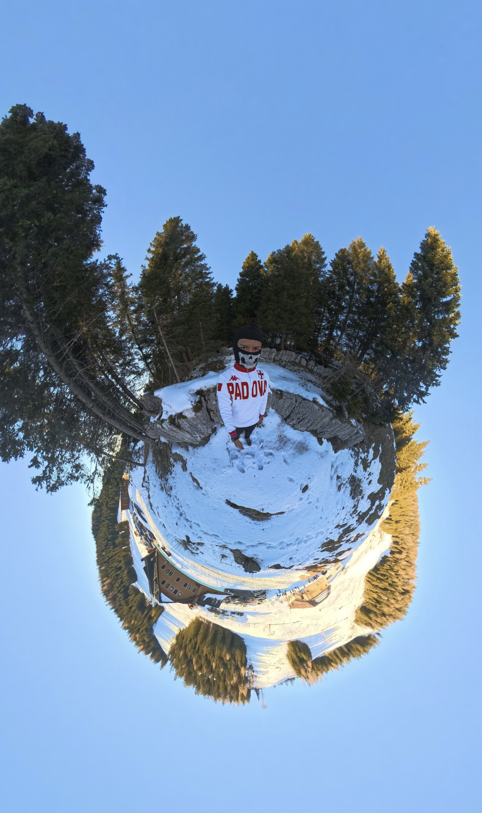
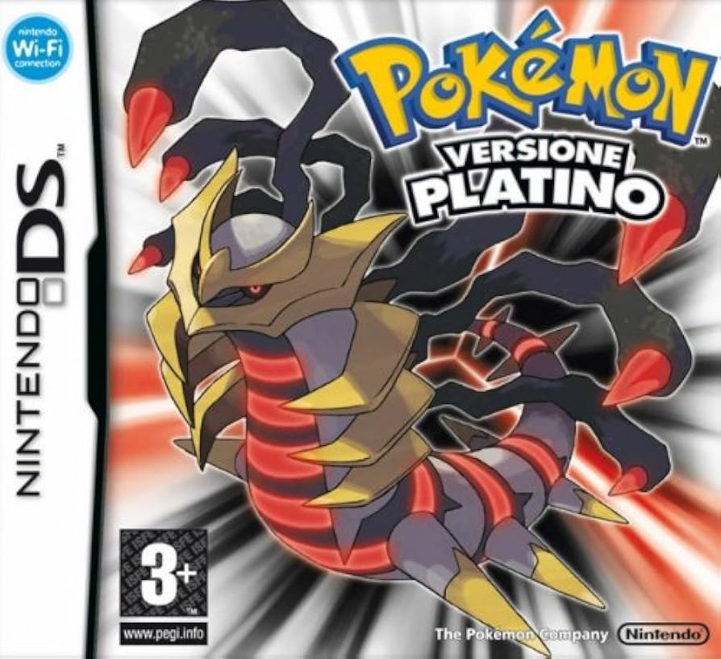

14 AGO 2026
Ho iniziato questo archivio
Per adesso nulla da dichiarare poi si vedrà
Uno spazio dove raccolgo foto, video, pensieri e tutto ciò che mi interessa. Nessun tema fisso: solo le cose che valgono la pena di essere conservate e condivise.

Ciao, racconto chi sono, cosa faccio e cosa mi appassiona.
Mi trovavo da solo a lavoro, e avevo già finito tutti i miei task , quindi ho deciso di creare e mettere on line il mio sito personale, visto che alle superiori ho imparato ad utilizzare HTML, JAVA e CSS, ho deciso di provaci visto che non ho mai avuto tempo per un progetto personale.
Il giorno di ferragosto visto che non ho organizzato nulla con nessuno, ho deciso di mettere mano al sito , d'altronde sono in vacanza posso fare quello che voglio 😄, Gemini e Claude mi hanno dato una grossa mano, è difficile trovare i bug in quasi 1800 righe di codice , e si che è un sito molto statico , non oso pensare come siano i siti che devono gestire utenti , mail e pagamenti 😱.
Guardando indietro, mi rendo conto di quanta strada ho fatto da quando ho iniziato: sono partito da un sito semplicissimo a schede (Home, Chi sono, Galleria, Video, Contatti) e piano piano l'ho trasformato in qualcosa di più mio. Ho aggiunto le sezioni YouTube, Film & Serie e Videogiochi, con un modale che si apre cliccando sopra e mostra copertina grande + descrizione. Ho messo un tema chiaro/scuro con un bottoncino sole/luna in alto a destra, che si ricorda la scelta anche se richiudo il sito. Ho ridisegnato bordi e ombre delle card per dare più profondità, e aggiunto piccole animazioni. Alla fine il sito comincia davvero a sembrare qualcosa di curato, e mi sta piacendo tenerlo aggiornato.
Una settimana ad Alghero che si potrebbe riassumere in: mare cristallino, escursioni in barca, aperitivi al tramonto e un'Odissea finale in aeroporto.
Il viaggio è iniziato sotto i migliori auspici: l'andata in volo è volata via in modo perfetto, liscio e puntualissimo. Una volta atterrati, ci siamo tuffati nei ritmi rilassati della Sardegna. Abbiamo esplorato la costa da un'altra prospettiva grazie a un giro in barca indimenticabile, fermandoci sotto le imponenti scogliere calcaree del promontorio per fare snorkeling in calette trasparenti insieme ai pesci.
Le giornate si sono divise tra avventure in acqua, nuotate in apnea e passeggiate serali per le vie del centro storico di Alghero, fino ad attendere il tramonto dorato sulla spiaggia con la vista del promontorio sullo sfondo.



L'unico vero momento "avventuroso" (e decisamente meno piacevole) è arrivato proprio alla fine: al momento di tornare a casa, il volo di rientro ha deciso di testare la nostra pazienza accumulate ben 12 ore di ritardo. Una maratona in aeroporto che ha messo a dura prova il nostro relax, ma che non è riuscita a scalzare il ricordo dei giorni fantastici passati in barca tra amici.
Ultimo giorno di ferie, riposo e relax sono d'obbligo, lo passero a vivere una vita lenta e goduriosa come tanto mi piace fare senza lasciare indietro le mie passioni.
Rientro in ufficio, con un risveglio un po' traumatico , si ritorna alla routine, colazione, preparazione della pasta per pranzo , ci si lava e ci si profuma e poi via con la mia Kia special che… poi sai si prega di non trovare traffico e si arriva nel magico ufficio. La giornata è appena iniziata speriamo finisca nei migliori dei modi, vi terrò aggiornati😉 .
Oggi ho fatto varie implementazioni e automatismi, nella comodità di casa sto provando se tutto funziona come dovrebbe, nei prossimi giorni comunque farò altri test. Probabilmente inizierò a pensare anche a qualcosa a livello di ux ai design, ovviamente facendomi aiutare da claude AI, visto che non ho competenze del genere, ma vediamo con calma.
Dopo un estenuante debug e infiniti minuti di deploy, posso ufficialmente dire che la struttura è solida e le implementazioni/automazioni funzionano, il passo successivo sarà quello di ux ui design, ma non prima di un back up di tutto , d'altronde perdere tutto adesso mi distruggerebbe, vi terrò aggiornati comunque, la cosa più frustrante è quando risolvi una cosa e ne rompi 3.





![Miniatura video Ryan Castro - HOPI SENDÉ (Live Session) [Medellín, Comuna 13]🎵](https://img.youtube.com/vi/S-NjVK28_2w/hqdefault.jpg)




Per adesso nulla da dichiarare poi si vedrà
Per le prossime news dovete attendere